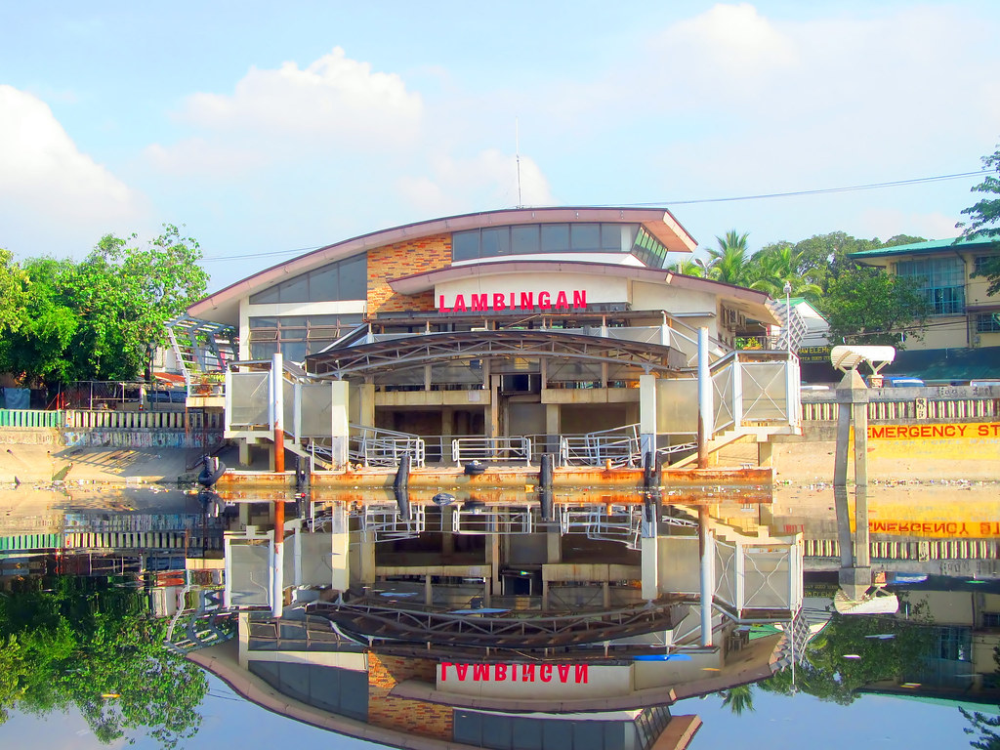
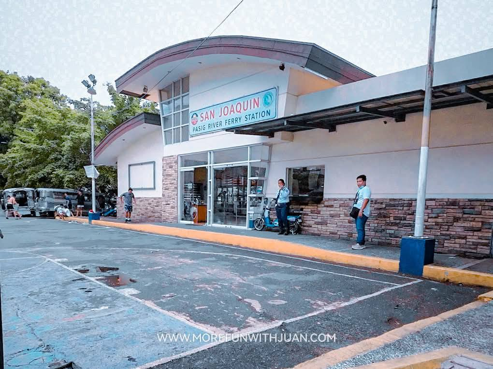
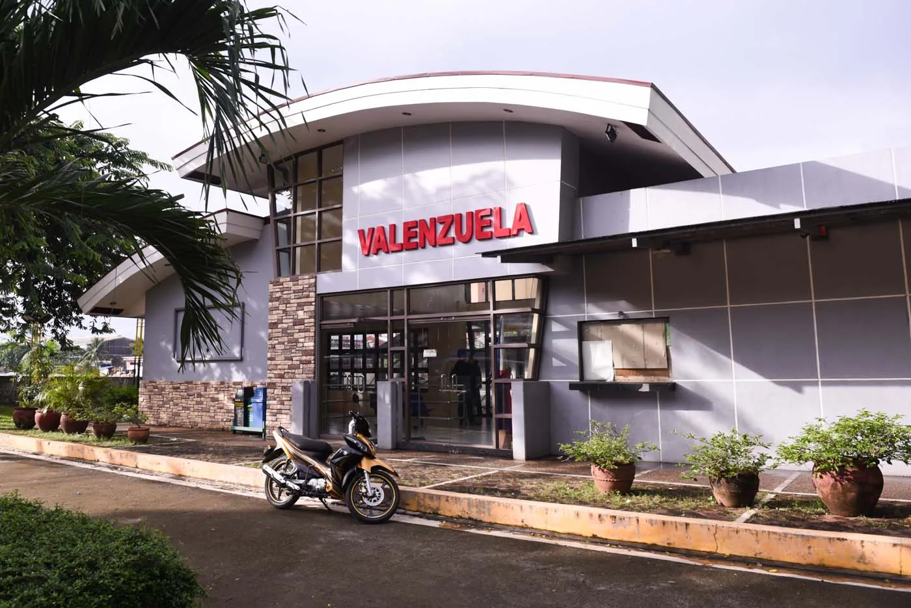
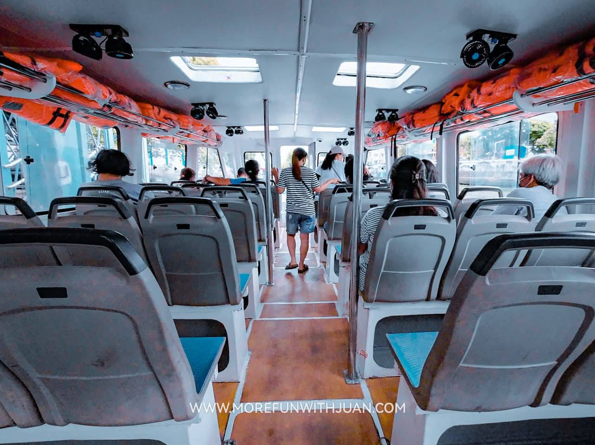
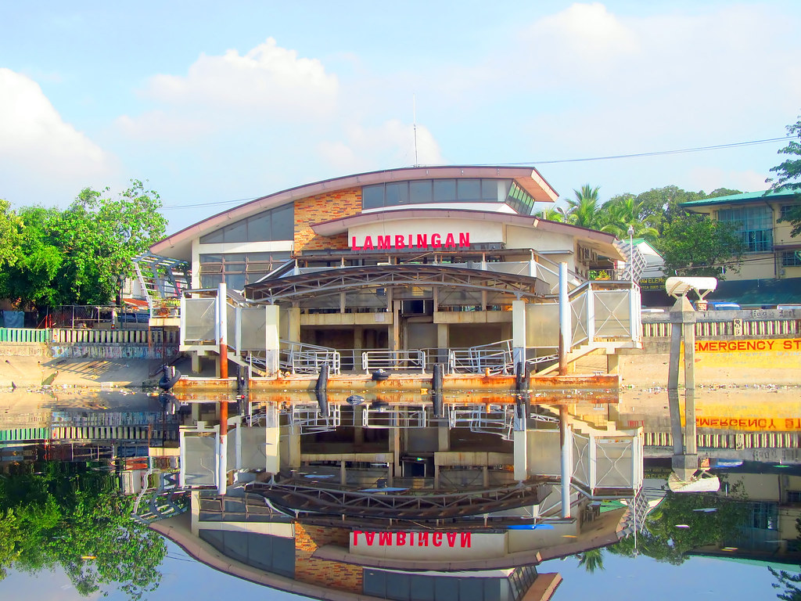
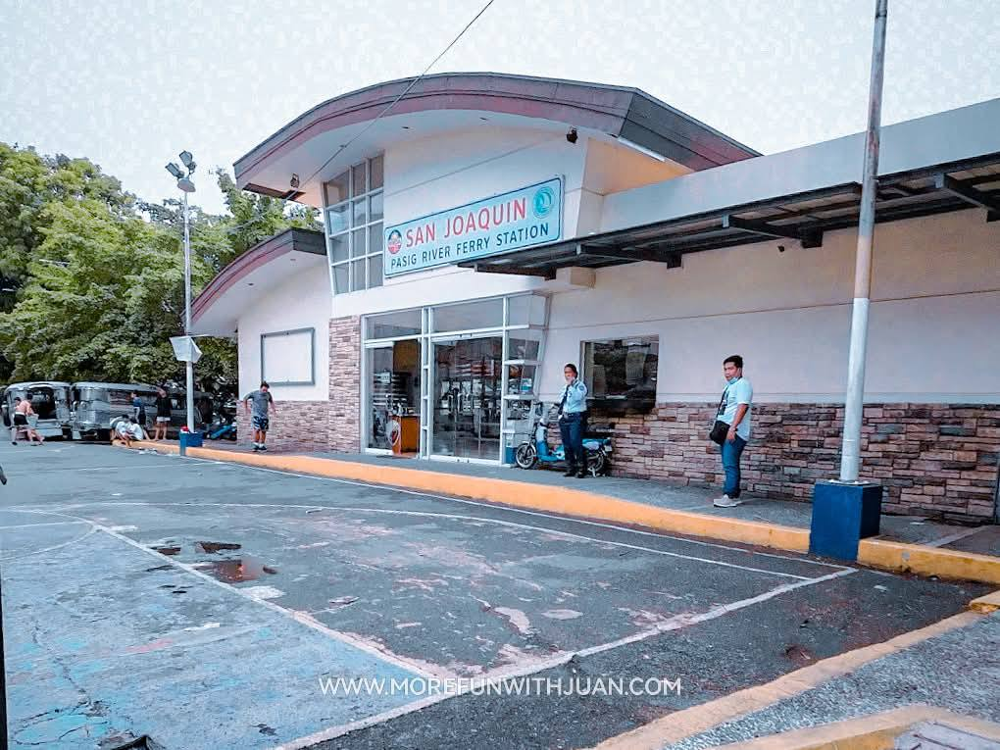
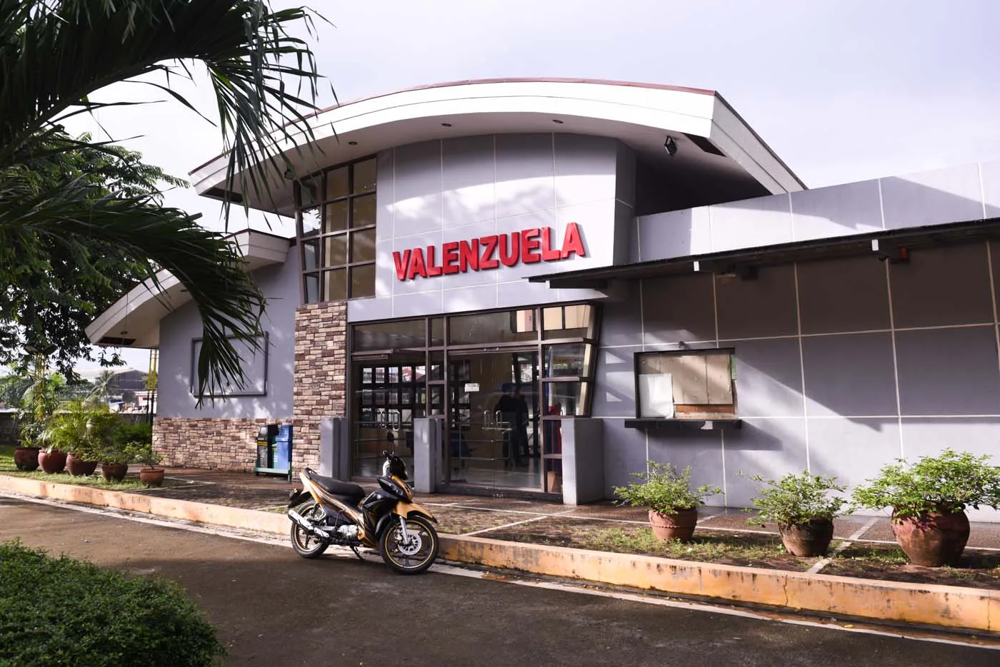
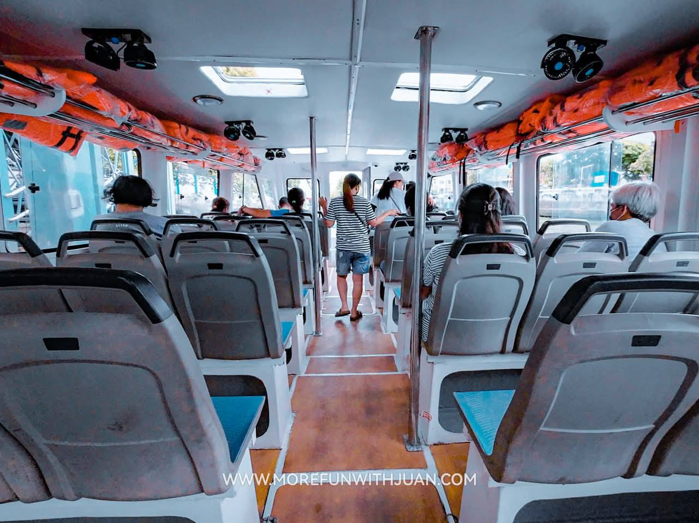

What is Pasig River Ferry Service?
a crucial transportation service operated by the Metropolitan Manila Development Authority (MMDA), serves as an alternative route to Metro Manila’s congested roads. With multiple ferry stations along the Pasig River, the system provides an eco-friendly and traffic-free option for commuters.